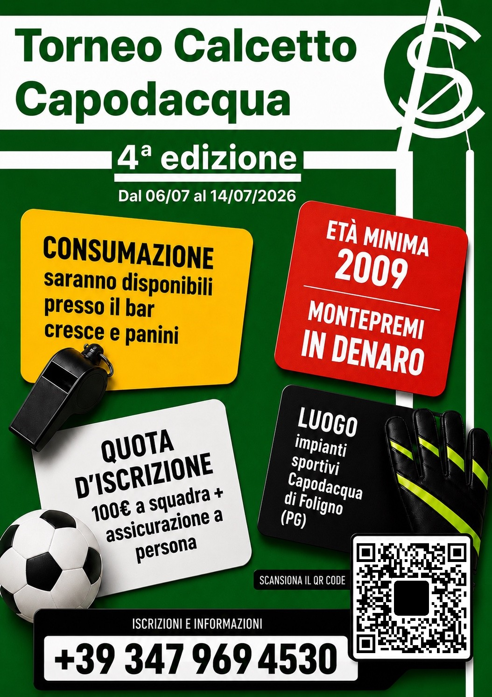

Sito ufficiale · 4ª Edizione
Torneo Calcetto
Capodacqua
Dal 06 al 14 luglio 2026 agli Impianti Sportivi Capodacqua di Foligno. Una competizione locale presentata con un’identità digitale premium.
Edizione 2026
Informazioni principali
Luogo
Impianti Sportivi Capodacqua di Foligno (PG).
Quota
100€ a squadra + assicurazione a persona.
Età minima
2009.
Consumazione
Saranno disponibili presso il bar cresce e panini.
Locandina ufficiale 2026
Versione finale con QR code
Locandina A4 verticale pronta per stampa e pubblicazione. Il QR code rimanda al sito ufficiale del torneo.

Formato stampa
File incluso in formato A4 verticale: 21 × 29,7 cm, 2480 × 3508 px a 300 DPI.
Per pubblicarla su Instagram puoi usare l’immagine web, per stamparla usa il PNG A4.
Archivio 2025
Squadre della scorsa edizione
Risultati